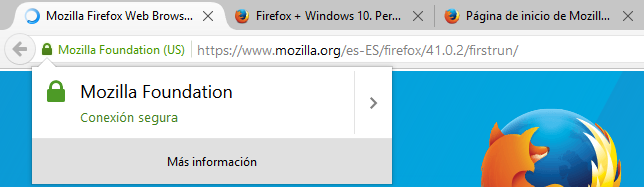
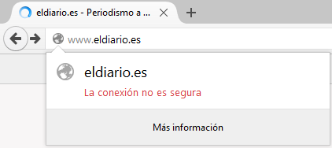
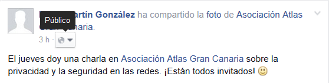

Por qué Facebook sabe más de tu vida que tú
(y cómo evitarlo)
David Martín González
Un poquito sobre mí
:-)
Motivación
¿Crees que es posible...
¿Quién puede querer espiarme?
Al otro lado del charco...

Foto: Wikipedia
Programa PRISM: Facebook, Apple, Google, Microsoft y Dropbox (entre otros) envían datos personales de sus usuarios a la NSA.
Y en España...
- Ley 25/2007, de conservación de datos
- Las telecos deben almacenar los siguientes datos:
- Con quién me comunico (por teléfono o Internet)
- La fecha, hora y duración de mis comunicaciones
- Mi localización geográfica al comenzar una comunicación
- Estos datos se almacenan durante entre seis meses y dos años
Si cada pocos minutos mi teléfono se comunica con una antena de telefonía...
...¡pueden saber dónde he estado en todo momento durante los últimos seis meses!
¿Qué problemas tiene esto?
¿Qué se puede saber de mí si llamo a mi hijo y, unos minutos después, a la Fundación de Ayuda para la Drogadicción?
¿Y si me localizan en un bar gay?
¿Y si un gobierno usase esto para localizar a disidentes?
¿A quiénes podrían interesarles estos datos?
- Fuerzas de seguridad
- Gobiernos poco democráticos
- Empresas
- Ladrones
Enlaces adicionales:
Cómo usar mal Facebook
- Cien ‘me gusta’ bastan para saber el sexo, raza o ideología de un usuario de Facebook
- ¿Qué podría ver en tu Facebook tu jefe?
También nos espía mala gente
¡El espionaje no es solo de gobiernos y empresas!
- Estafadores y ladrones
- ¡Encantados de conocerte mejor!
- Parejas, amigos y familiares celosos
- Querrían mirar tus Whatsapp, tus correos, tus mensajes en Facebook...
- Informáticos o telecos con demasiado tiempo libre
- Además de lo anterior, robo de cuentas
¿Qué puedo hacer para defenderme?
Cuestión de prioridades
No tiene sentido preocuparte por la NSA si dejas tu Facebook abierto en la oficina o en el móvil...
- Cuidado con las contraseñas gráficas en los móviles; mejor, PIN largos
- Cierra tu sesión siempre en Facebook, Gmail, Dropbox...
- Nunca le des a «recordar contraseña»
Contraseñas seguras
¿Qué es una contraseña segura?
¿Por qué es importante?
No reutilices contraseñas entre páginas web distintas
Truco: coge una frase distinta para cada sitio y úsala de referencia
Ejemplo para Facebook: FlDeGeQuNoMeIm
(fleje de gente que no me importa)
Datos cifrados
Cifrado: modificar un mensaje de forma que solo pueda ser leído con la contraseña
¡Tener una contraseña no es sinónimo de cifrar la información!
Si necesitas cifrar datos, usa herramientas para ello (VeraCrypt)
Conexiones inseguras
¡Ojo con el WiFi sin contraseña! Cualquiera puede observar lo que envías
Tus comunicaciones deberían ir siempre cifradas
Es fácil saber si las páginas que visitas están cifradas
Conexión segura:
https://www.mozilla.org/...
Conexión insegura:
No tiene HTTPS delante
¡No envíes contraseñas por aquí!
¿Qué comparto en Facebook?
Mucho cuidado con lo que desconocidos pueden ver
- No subas nada que no quieras que otros sepan
- Lo que subas, mejor solo para tus amigos
¿Por qué no uso Whatsapp?
- Ha usado cifrados fáciles de romper
- Un espía puede saber con quién te comunicas
- Almacena tus imágenes en lugares públicos y sin cifrarlas
- Es de Facebook ;-)
Alternativa: Telegram
Y si quieres ocultarte de la NSA...
- Navegación web segura: Tor
- Cambia de proveedor de correo: ProtonMail
- Usa correo cifrado
- Encripta lo que subas a la nube: VeraCrypt
- No lleves el móvil a todos lados
Diapositivas disponibles en
https://github.com/unpollito/lodefacebook
Por qué Facebook sabe más de tu vida que tú
(y cómo evitarlo)
David Martín González